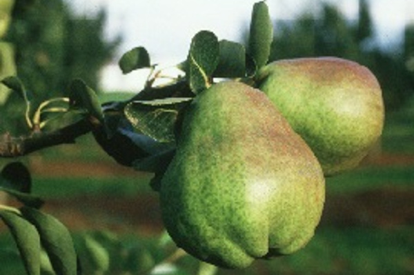

Pera
- Nombre PERA
- Nombre Científico Pyrus communis L.
- Familia Rosaceae
- Nombres Comunes Pera, peral

Se considera una especie sensible a la sequía, por lo que precisa del riego para su cultivo (Yuste, 1997b).
Moderada a alta insolación. Días nublados favorecen la presencia de enfermedades.
Requiere condiciones medias de humedad ambiental.
| Origen | Sureste de Europa (Westwood, 1978). Oeste de Asia, alrededor del Mar Caspio (Santibáñez, 1994). | |
| Distribución | 30° a 55°LN y LS. | |
| Adaptación | Regiones templadas y frías. | |
| Altitud | >2000 m en los subtrópicos. |
Tipo de planta
Ciclo Vegetativo
Tipo fotosintético
Fotoperiodo
Huertas localizadas en laderas de montañas o colinas con una pendiente moderada, tienen las mejores condiciones, ya que en las partes bajas de los valles o en terrenos planos se pueden presentar daños por heladas (Teskey y Shoemaker, 1972).
Es una especie que presenta baja tolerancia a la salinidad (Gostinçar, 1997). Sufre daños a concentraciones menores a 0.5 g/l de NaCl (Yuste, 1997b). No tolera suelos calichosos (Yuste, 1997b).
Desarrolla adecuadamente en un rango de pH que va de 5.8 a 7.1, con un mínimo de tolerancia de 5.6 (Yuste, 1997b).
En esta página se muestra información sobre una de las parcelas.
Si sigues el Tour te mostraré el tipo de información disponible y cómo se consigue.
Ahora mismo hay dos fuentes de información fundamentales:
¿Quieres que te los enseñe?
En la parte superior tendrás siempre el botón HOME, al pulsar sobre él se abre el menú lateral con el que navegar por la página.
En la parte superior izquierda puedes ver la referencia catastral de la parcela, este dato se obtiene del catastro que lo proporciona a partir de las coordenadas geográficas de la parcela.
Esta información estará también siempre visible cuando navegues por la página.
Esta es la dirección exacta de la parcela, la que usa el catastro para identificarla. También se obtiene del catastro a partir de las coordenadas geográficas.
Estos son los primeros widget con información, tienen información de resumen sobre diversos datos, en este caso las precipitaciones acumuladas de este año.
La precipitaciones se obtienen como Open Data, éstas las proporciona la Junta de Castilla y León a través de la página inforiego.org del Instituto Tecnológico Agrario.
La información con la que se trabaja está organizada en tarjetas que se pueden cerrar si no es lo que quieres ver ahora mismo.
Si quieres volver a abrir una tarjeta que has cerrado simplemente tienes que seleccionarla de nuevo en el menú lateral que se abre al pulsar el botón "HOME".
Las coordenadas geográficas están representadas en un mapa de Google. Además está dibujado el recinto que forma la parcela a través de las coordenadas que da el Catastro a través de la referencia catastral que obtuvimos antes.
Si pulsas sobre el recinto, puedes ver el listado de las coordenadas geográficas que lo forman.
Hay más información que proporciona el Catastro y que es imprescindible para saber qué se puede hacer con una parcela a efectos legales.
La información que aparece aquí es la que proporciona el Catastro como Open Data, para cualquiera que quiera consultarla, si además eres el propietario de la parcela, en la propia página web del catastro puedes acceder a más información interesante.
Toda esta información está disponible en la Sede Electrónica del Catastro.
Yo soy OSCαr, pulsando sobre mí puedes obtener más información sobre cómo funciono.
Como puedes ver estoy geolocalizado. Aunque no son mis coordenadas exactas, si alguien me mueve te aviso rápidamente.
Este es el tipo de información que proporciono con los sensores que tengo ahora mismo, además informo de la fecha y la hora a la que envié la información.
La frecuencia con la que la envío es configurable y todos los datos se van guardando para ser posteriormente analizados.
En esta otra tarjeta se muestran de forma gráfica los datos que se obtienen de la estación meteorológica más cercana a la parcela.
Hay estaciones meteorológicas por todo el territorio que ofrecen sus datos como Open Data. En algunos casos están suficientemente cerca como para que sus datos por si mismos sean significativos.
En el caso de esta parcela esto no es así, está a unos 11km en línea recta pero las consiciones del terreno hacen que sus datos por si solos no sean suficientes.
La parcela se encuentra en una zona de monte separada por unas montañas de esta estación, pero sus datos cruzados con los datos que da OSCαr sí que son muy interesantes.
Los datos se representan de forma gráfica, en este caso comparando las lluvias acumuladas mensuales a través de los años. Dependiendo de los datos se elige una representación u otra con el objetivo de ayudar visualmente a interpretarlos.
Además a partir de los datos de la estación se obtienen valores de resumen que pueden resultar interesantes, en este caso los días de lluvia y la cantidad de lluvia acumulada. En otros casos datos medios, mínimos, máximos, etc.
En este cuadro aparece un resumen de las fuentes de información que actualmente se utilizan con enlaces a las mismas.
Esta es una versión inicial muy básica para mostrar el tipo de información y la forma de mostrarla.
Las fuentes de información disponibles son muy amplias e iremos añadiendo más en siguientes versiones.
Además próximamente añadiremos un tipo de información muy diferente e interesante que no se puede obtener actualmente en otro sitio:
Utilizando los datos de la parcela proporcionaremos un listado de posibles alternativas de uso específicos para cada parcela.
¿Te interesa? Danos tu correo y te mantendremos actualizado. Pulsa sobre el botón "+"